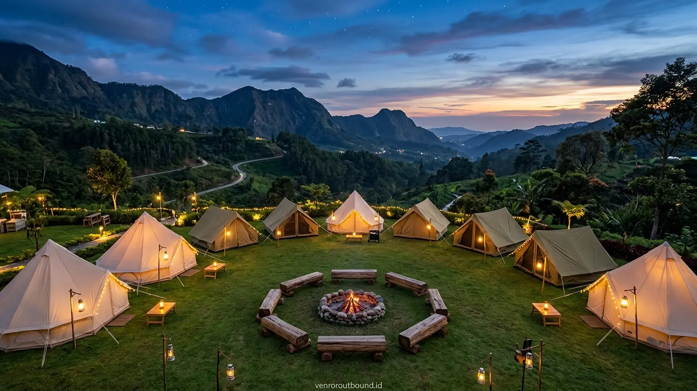
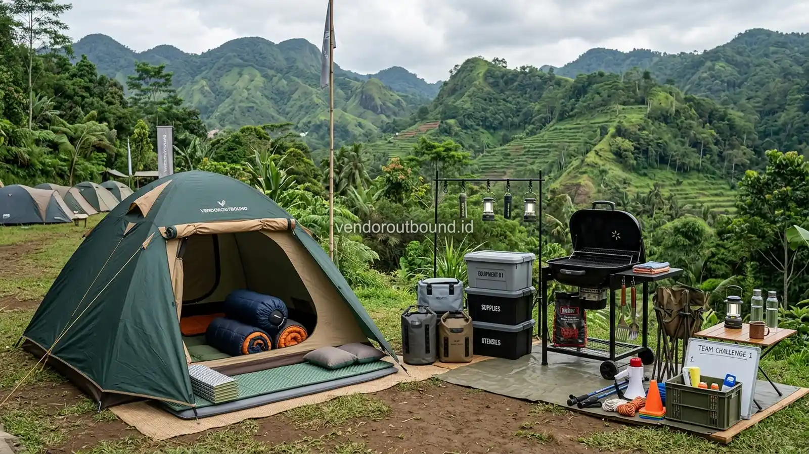
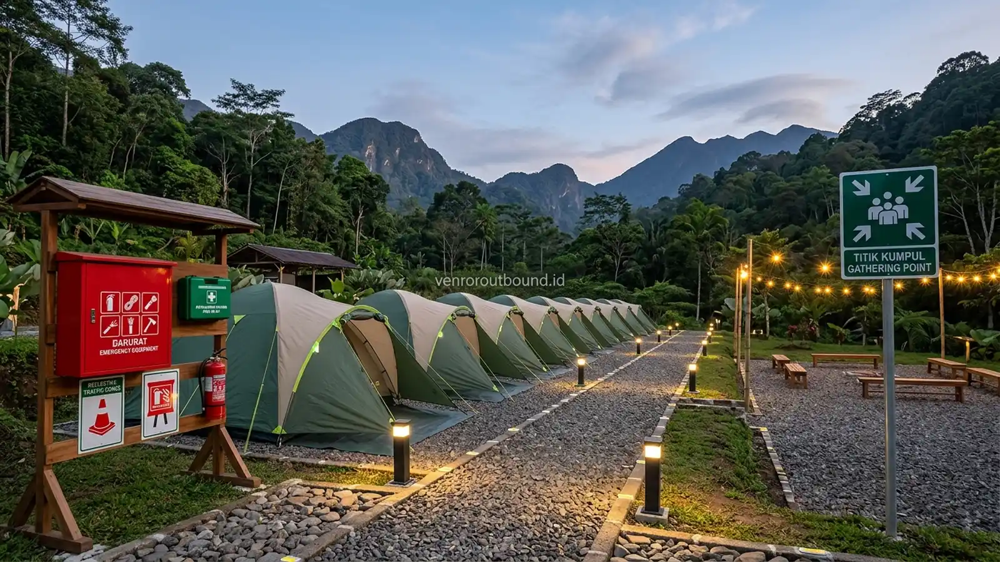

Apa Itu Paket Outbound Camping & Fun Night Gathering?
Jawaban singkat: Paket outbound camping dan fun night gathering dapat menggabungkan aktivitas team building di alam terbuka dengan sesi kebersamaan malam. Komponen program dapat mencakup camping, fun games, sesi refleksi, konsumsi, dan perlengkapan camping sesuai paket. Lokasi seperti Batu atau Pacet dapat dipertimbangkan berdasarkan kebutuhan dan ketersediaan venue. Detail fasilitas, perlengkapan tidur, konsumsi, dan aktivitas harus dikonfirmasi dalam proposal.
Bagi para Event Organizer internal perusahaan, pengurus Employee Engagement, dan manajer HRD, merancang agenda tahunan yang mampu memberikan penyegaran total sekaligus mempererat kekompakan tim menuntut ide-ide segar. Format kegiatan konvensional yang berpusat di ballroom hotel sering kali menyisakan kesan seremonial yang formal dan cepat terlupakan. Di sinilah daya tarik Paket Outbound Camping yang dipadukan dengan kehangatan fun night gathering menjadi jawaban yang relevan dan solutif.
Paket outbound camping menggabungkan keunggulan simulasi team building di siang hari dengan keintiman interaksi malam di perkemahan. Peserta diajak merasakan atmosfer alam pegunungan yang sejuk, mendengar gemerisik dedaunan di sekitar tenda, serta menikmati kebersamaan santai di bawah pendaran lentera malam. Format ini memberikan keseimbangan antara penguatan kapasitas kepemimpinan, pemecahan masalah kelompok, dan ruang jeda (retreat) yang menenangkan dari beban pekerjaan sehari-hari.
Konsep Kegiatan Camping Perusahaan
Secara konseptual, camping perusahaan bukanlah sekadar memindahkan karyawan untuk tidur di luar ruangan, melainkan sebuah ekosistem pembelajaran eksperiensial (experiential learning ecosystem). Di alam terbuka, setiap individu didorong untuk melepaskan topeng jabatan dan berinteraksi secara autentik sebagai sesama rekan tim.
Konsep ini dibangun di atas tiga pilar utama:
- Kolaborasi Tanpa Sekat: Aktivitas kelompok yang dirancang melibatkan kerja sama fisik dan komunikasi terbuka, menghilangkan silo-silo antardepartemen yang kerap terbentuk di kantor.
- Kebersamaan Manusiawi (Human Connection): Suasana malam di sekitar tenda membuka peluang dialog yang lebih empati, mendengarkan cerita rekan kerja, dan saling mengapresiasi kontribusi masing-masing.
- Penyegaran Mental (Mindful Reset): Udara pegunungan yang bersih dan panorama hijau menjadi katalis alami untuk meredakan kejenuhan mental serta membangkitkan kembali motivasi kerja.
Aktivitas yang Dapat Dikombinasikan
Keunggulan mendasar dari paket outbound camping adalah fleksibilitasnya dalam memadukan berbagai modul kegiatan. Bergantung pada sasaran pengembangan SDM yang ingin dicapai, panitia dapat mengombinasikan beberapa rangkaian acara:
- Fun Games & Ice Breaking Siang Hari: Pemanasan interaktif yang energik untuk mencairkan suasana dan membangkitkan tawa spontan.
- Simulasi Team Building Dinamis: Tantangan kelompok pemecahan masalah (problem solving challenges) yang menuntut strategi terencana dan pembagian peran yang adil.
- Fun Night Gathering: Malam apresiasi santai dengan alunan musik akustik, permainan kebersamaan non-fisik, dan obrolan hangat di sekitar perapian.
- Sesi Refleksi & Komitmen Tim: Evaluasi pengalaman bersama yang difasilitasi pemandu untuk merumuskan aksi nyata perbaikan budaya kerja.
- Aktivitas Wisata Tambahan (Opsional): Penambahan rute offroad petualangan, fun trekking ke air terjun terdekat, atau sesi arung jeram (rafting) pada hari kedua sesuai ketersediaan fasilitas.

Manfaat Camping & Outbound Night Activity Untuk Membentuk Kedisiplinan Tim
Pahami bagaimana suasana malam di alam bebas membangun ruang interaksi yang hangat, jujur, dan mempererat solidaritas kerja.
Fun Games untuk Team Building
Modul permainan kelompok dalam paket camping dirancang dengan pendekatan rekreatif yang tidak melelahkan secara berlebihan. Tujuannya adalah membangun kelekatan sosial tanpa risiko cedera fisik. Beberapa contoh modul fun games yang kerap dihadirkan meliputi:
- Spider Web & Toxic Waste Mini: Simulasi penyelamatan kelompok melewati jaring rintangan atau memindahkan bola tanpa menyentuh area bahaya, melatih perencanaan taktis dan kehati-hatian tim.
- Pipeline Ball Delivery: Mengalirkan bola melintasi susunan pipa paralon pendek dari titik start menuju target akhir, menekankan pentingnya kesinambungan proses dan koordinasi antardivisi.
- Human Ladder of Trust: Ujian kekompakan memegang kayu pijakan untuk dilewati rekan setim secara bergantian, memperkuat rasa saling percaya dan tanggung jawab bersama.
Night Activity dan Sesi Refleksi
Saat malam tiba, fokus kegiatan bertransformasi menjadi lebih tenang dan hangat. Night activity menjadi puncak kebersamaan di mana seluruh peserta berkumpul mengelilingi perapian yang aman. Sesi ini dipandu oleh fasilitator berpengalaman yang mengarahkan alur dialog agar tetap positif, tidak menghakimi, dan memupuk apresiasi tulus antaranggota organisasi.
Pemanfaatan api unggun dilakukan secara bertanggung jawab dengan mematuhi aturan venue, memastikan jarak aman dari tenda, serta menyediakan perlengkapan pemadam darurat. Jika kondisi cuaca hujan atau berangin kencang, sesi dialihkan ke aula pendopo semi-indoor dengan pencahayaan lentera baterai yang tetap memancarkan kehangatan suasana kekeluargaan.

Camping dan Perlengkapan Menginap
Kenyamanan beristirahat peserta menjadi prioritas dalam paket perkemahan perusahaan. Mengetahui status setiap komponen fasilitas yang tercantum dalam proposal penawaran sangat penting sebelum melakukan reservasi.
Tabel berikut menguraikan komponen standar yang dapat disesuaikan dalam proposal:
| Komponen Layanan | Fungsi Utama | Status Konfirmasi |
|---|---|---|
| Area camping | Tempat menginap dan arena aktivitas luar ruangan | Konfirmasi ketersediaan venue |
| Tenda perkemahan | Akomodasi tidur peserta (kapasitas 3–4 orang per unit) | Sesuai pilihan paket |
| Matras tidur | Isolator dingin tanah dan alas tidur yang nyaman | Sesuai pilihan paket |
| Sleeping bag | Penghangat tubuh saat suhu pegunungan menurun | Sesuai pilihan paket |
| Penerangan tenda | Lampu lentera portabel untuk penerangan malam | Sesuai pilihan paket |
| Fun games & alat | Media stimulasi team building dan interaksi | Sesuai desain program |
| Fasilitator lapangan | Pemandu alur acara, ice breaking, dan refleksi | Sesuai pilihan paket |
| Konsumsi katering | Makan berat komunal, snack box, dan coffee break | Sesuai proposal tertulis |
| Sesi Barbecue | Aktivitas santap malam panggang bersama di luar ruangan | Jika tersedia / opsi tambahan |
| Api unggun | Fokus sesi malam jika diizinkan oleh pengelola venue | Tergantung aturan venue & cuaca |
| Dokumentasi acara | Perekaman foto dan video dokumentasi kegiatan | Sesuai kesepakatan proposal |
| Sound system portabel | Pengeras suara nirkabel untuk pemandu acara | Sesuai kebutuhan lapangan |

Persiapan K3 & Pertolongan Pertama Pada Kegiatan Outbound Camping Malam
Simak checklist inspeksi tapak kemah, jalur evakuasi darurat, dan kesiapan medis dasar untuk kegiatan perkemahan perusahaan.
Pilihan Area Batu dan Pacet
Di Jawa Timur, kawasan pegunungan Batu dan Pacet (Mojokerto) merupakan dua destinasi favorit yang kerap dipertimbangkan oleh panitia corporate gathering. Masing-masing kawasan memiliki karakter lingkungan yang unik:
- Area Batu Malang: Terkenal dengan iklim pegunungan yang sejuk di lereng Gunung Panderman dan Arjuno, pemandangan panorama kota dari ketinggian, serta ketersediaan sarana pendukung wisata modern yang lengkap. Sangat cocok bagi perusahaan yang menginginkan kombinasi berkemah dengan rekreasi kota wisata.
- Area Pacet Mojokerto: Menawarkan nuansa hutan pinus yang rindang di kaki Gunung Welirang, sumber mata air alami, suasana alam yang lebih hening dan asri, serta kedekatan akses menuju sungai arung jeram (rafting). Sangat ideal bagi tim yang menginginkan petualangan alam yang lebih autentik dan menenangkan.
Panitia perlu mendiskusikan opsi area ini dengan mempertimbangkan jarak tempuh rombongan, aksesibilitas kendaraan bus, serta ketersediaan tanggal kosong pada camping ground yang dituju.
Bagaimana Memilih Lokasi Camping Perusahaan?
Memilih tapak perkemahan korporat berbeda dengan perkemahan backpacker mandiri. Faktor kenyamanan dan keamanan rombongan kerja harus diutamakan:
- Akses Jalan dan Tempat Parkir: Pastikan jalur jalan dapat dilalui bus pariwisata atau armada HiAce tanpa hambatan tikungan sempit yang berbahaya, serta area parkir yang aman dan luas.
- Kapasitas dan Kebersihan MCK: Jumlah bilik toilet harus memadai dengan pasokan air bersih yang melimpah dan penerangan jalur yang aman di malam hari.
- Keberadaan Shelter Kontingensi: Adanya aula pertemuan atau pendopo permanen yang dapat menampung seluruh peserta jika sewaktu-waktu terjadi cuaca buruk.
- Jarak ke Fasilitas Kesehatan Terdekat: Mengetahui jarak tempuh menuju Puskesmas atau klinik 24 jam untuk kesiapsiagaan darurat medis.
K3 dan Rencana Kontingensi
Aspek Keselamatan dan Kesehatan Kerja (K3) adalah pilar yang tidak boleh diabaikan. Tim fasilitator dan panitia bersama-sama menyusun matriks kontingensi untuk mengantisipasi potensi risiko, seperti cedera ringan saat beraktivitas di tanah berkontur, penurunan suhu dingin ekstrem, atau curah hujan lebat. Penyediaan kotak P3K lengkap, penentuan titik kumpul darurat, dan komunikasi radio dua arah (walkie-talkie) antarposko menjadi bagian tak terpisahkan dari standar penyelenggaraan acara.
Contoh Rundown 2 Hari 1 Malam
Berikut adalah simulasi alur kegiatan paket outbound camping 2D1N yang dapat disesuaikan dengan kebutuhan jam kerja dan perjalanan kantor Anda:
| Hari & Waktu | Agenda Kegiatan | Keterangan Pelaksanaan |
|---|---|---|
| Hari 1 — 13.00 | Kedatangan Rombongan | Tiba di venue, registrasi, dan welcome drink segar. |
| Hari 1 — 13.30 | Briefing & Pembagian Tenda | Penjelasan tata tertib K3 dan penempatan tenda menginap. |
| Hari 1 — 14.30 | Ice Breaking & Team Building | Simulasi permainan kolaboratif di lapangan rumput terbuka. |
| Hari 1 — 17.00 | Istirahat & Mandi Sore | Pembersihan diri dan persiapan pakaian hangat malam. |
| Hari 1 — 18.30 | Makan Malam / Barbecue | Santap malam bersama di area makan perkemahan. |
| Hari 1 — 19.45 | Fun Night Gathering | Aktivitas malam, permainan komunikasi santai, dan musik akustik. |
| Hari 1 — 21.00 | Sesi Refleksi Kebersamaan | Perenungan makna kebersamaan tim di dekat perapian aman. |
| Hari 1 — 22.30 | Jam Istirahat (Quiet Time) | Peserta beristirahat di tenda masing-masing. |
| Hari 2 — 06.00 | Senam Ringan & Hirup Udara Segar | Peregangan otot ringan menikmati matahari terbit pegunungan. |
| Hari 2 — 07.00 | Sarapan Pagi Bersama | Menikmati menu sarapan hangat khas masakan lokal. |
| Hari 2 — 08.30 | Closing Ceremony & Komitmen Tim | Penyerahan apresiasi kelompok dan foto bersama di banner acara. |
| Hari 2 — 10.30 | Persiapan Check-out | Pengemasan barang bawaan pribadi dan perjalanan kembali. |

Tips Mempersiapkan Perlengkapan Outbound Camping untuk Kenyamanan Tim
Panduan memilih sleeping bag, matras isolator, pakaian hangat, dan peralatan esensial saat menginap di perkemahan alam terbuka.
Bagaimana Mengajukan Paket Custom?
Setiap organisasi memiliki karakteristik budaya kerja, rentang usia peserta, dan batasan anggaran yang berbeda-beda. Untuk mendapatkan penawaran yang tepat guna, tim panitia dapat menyampaikan data kebutuhan awal saat berkonsultasi:
- Rencana Waktu dan Durasi: Tanggal pelaksanaan dan pilihan akhir pekan yang diinginkan.
- Jumlah dan Komposisi Peserta: Estimasi total peserta beserta proporsi pria, wanita, atau jajaran pimpinan.
- Preferensi Konsep dan Destinasi: Pilihan preferensi area (Batu atau Pacet) serta konsep acara (dominan santai rekreasi atau simulasi team building terarah).
- Kebutuhan Tambahan: Penambahan menu makanan khusus (barbecue kambing guling/seafood), sewa kendaraan HiAce/bus pariwisata, atau dokumentasi aftermovie video.
Checklist Sebelum Booking
Lakukan pemeriksaan akhir terhadap rincian proposal sebelum menyetorkan uang muka reservasi:
| Item Verifikasi | Poin yang Harus Dipastikan |
|---|---|
| Kepastian Tanggal & Lahan | Area camping ground telah direservasi khusus untuk rombongan Anda. |
| Daftar Fasilitas Tertulis | Rincian tenda, matras, sleeping bag, makanan, dan fasilitator tertera dalam proposal. |
| Skenario Cadangan Cuaca | Ketersediaan pendopo aula darurat telah disetujui pengelola lokasi. |
| Syarat & Ketentuan Pembayaran | Mekanisme pembayaran termin dan klausul penyesuaian tanggal dipahami jelas. |
| Kontak Koordinator Lapangan | Nomor PIC penanggung jawab acara telah dicatat oleh ketua panitia. |
Wujudkan Pengalaman Camping Perusahaan Berkesan Bersama Kami
Dapatkan penawaran paket camping gathering perusahaan yang dapat dikustomisasi berdasarkan jumlah peserta, durasi, lokasi, aktivitas, dan fasilitas. Hubungi admin Vendor Outbound di +62 82211221909 untuk konsultasi dan proposal kustom.
Hubungi Kami via WhatsAppKesimpulan
Paket outbound camping dan fun night gathering di kawasan sejuk Batu dan Pacet menghadirkan pengalaman kebersamaan luar ruangan yang menyegarkan dan bermakna. Menggabungkan dinamika permainan kerja sama tim, kenyamanan tenda perkemahan yang rapi, dan kehangatan refleksi malam di sekitar perapian yang aman terbukti efektif mempererat komunikasi antarkaryawan. Dengan perencanaan teliti, keterbukaan rincian fasilitas dalam proposal, serta penerapan standar K3 yang bertanggung jawab, agenda gathering perusahaan Anda akan menjadi investasi berharga bagi soliditas tim dan produktivitas organisasi ke depan.
Pertanyaan Sering Diajukan (FAQ)

Arby Ardiansyah
Arby Ardiansyah merupakan penulis konten yang membahas outbound, experiential learning, team building, family gathering, dan kegiatan pengembangan karakter untuk kebutuhan sekolah, keluarga, komunitas, maupun perusahaan.